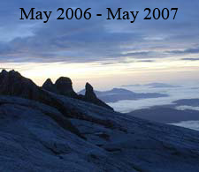

Updated: 5 Jan 2016 |
Update plan: Mar 2016 |
Update plan: Jan 2016 |
 | ||
Update plan: May 2016 |
Update plan: mid 2016 |
Updated: 7 Dec 2015 |
Updated: 31 Oct 2006 |
Completed |
Completed |

Special Topics
Bamboo Homes in Southeast Asia Updated: 7 Dec 2015 |
Transportation in Southeast Asia Updated: 20 Jan 2007 |
7th thru 14th c. S.E.Asian Civilizations Updated: 5 Jan 2016 |
Updated: 5 Jan 2016 |
The site is divided into multiple paths: nine visits identified on photo by date, and four special topics. "Updated" is a flag to identify changes in content. Note that if interested in a particular country, return to this Trav-E-Log home page to view additional entries for that country.
The Special Topics path of Backpacking Hints is where you will find information about planning your own journey. The Civilizations area, however, is turning out to be a much larger task than originally planned. My intent is to show representative photos of each temple complex, indicating similarities and differences, but have stumbled over how to present this on a web site. How do you compare one complex in Viet Nam to over 2000 in Bagan?
Enough introduction -- click on a Visit or Special Topic to begin your virtual trip!
Questions? Contact me at the Juno.com address Dancer2SEAsia.